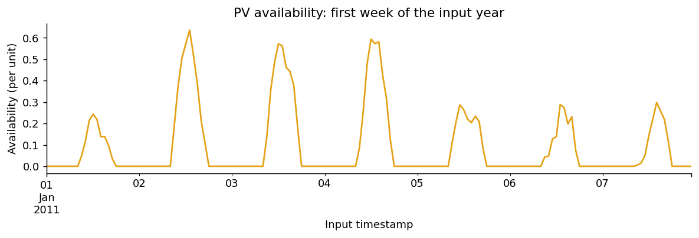
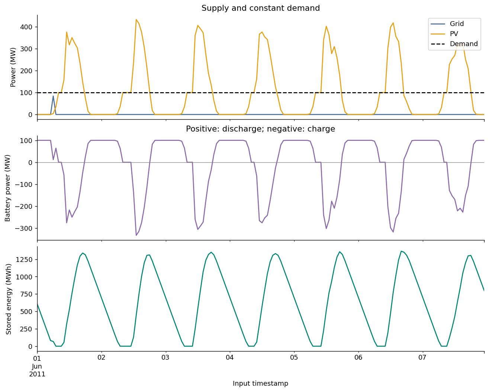
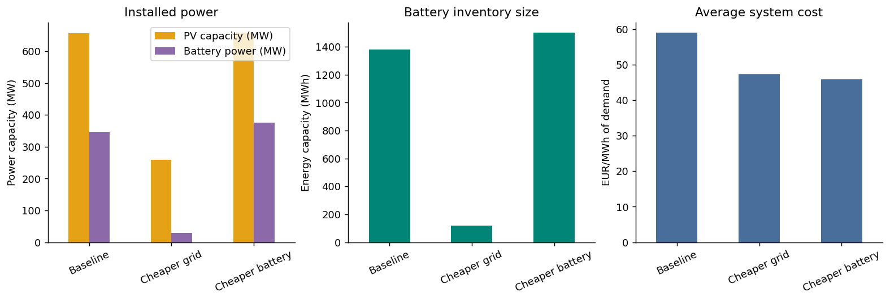

Investment and storage: when do PV and batteries help?#
PyPSA can choose both installed capacity and hourly operation. This lesson takes the investment question from Quickstart 3 and develops a reproducible comparison exercise.
Your task#
Compare supplying a constant 100 MW demand with grid electricity, PV, and a battery. Predict the effect of cheaper grid electricity and cheaper storage before solving. Select Python (pypsa-course) and run cells in order.
Learning objectives#
Distinguish fixed capacity from a capacity the solver may build.
Convert overnight costs into annual capital costs with consistent units.
Read battery power (MW), inventory capacity (MWh), and operation separately.
Explain a scenario response using both capacities and hourly operation.
This is the Seville reference setting, not Groningen. The input solar profile is linked by the official example. It is a modelled availability profile, not electricity measured from our chosen plant. The Groningen case will use the instructor’s separate datasets.
import numpy as np
import pandas as pd
import matplotlib.pyplot as plt
import pypsa
from IPython.display import display
print("PyPSA:", pypsa.__version__)
plt.rcParams.update({"figure.dpi": 110, "axes.spines.top": False,
"axes.spines.right": False})
PyPSA: 1.4.0
Read and validate the hourly profile#
The loader saves the downloaded CSV beside the notebook, so subsequent runs use the same local copy. It downloads only when the cache is absent; there is no silent replacement with synthetic data if the service fails. An instructor can supply the identical file for offline classes.
solar_pu is dimensionless availability per unit of nominal PV capacity. For example, 0.4 permits at most 40 MW from 100 MW of PV during that interval. The solver can curtail production.
from pathlib import Path
from urllib.request import urlretrieve
profile_path = Path("data/seville-2011.csv")
profile_url = "https://model.energy/data/time-series-f17c3736a2719ce7da58484180d89e2d.csv"
profile_path.parent.mkdir(exist_ok=True)
if not profile_path.exists():
try:
urlretrieve(profile_url, profile_path)
except Exception as exc:
if profile_path.exists():
profile_path.unlink()
raise RuntimeError("Download failed. Ask your instructor for seville-2011.csv and place it in data/.") from exc
profile = pd.read_csv(profile_path, index_col=0, parse_dates=True)
solar_pu = pd.to_numeric(profile["solar"], errors="raise")
assert len(solar_pu) == 8760
assert solar_pu.index.is_unique and solar_pu.index.is_monotonic_increasing
assert solar_pu.notna().all() and solar_pu.between(0, 1).all()
assert (solar_pu.index.to_series().diff().dropna() == pd.Timedelta(hours=1)).all()
print("Hours:", len(solar_pu), "Mean availability:", round(solar_pu.mean(), 3))
fig, ax = plt.subplots(figsize=(9, 3), layout="constrained")
solar_pu.iloc[:168].plot(ax=ax, color="#e5a216")
ax.set(title="PV availability: first week of the input year", ylabel="Availability (per unit)", xlabel="Input timestamp")
plt.show()
Hours: 8760 Mean availability: 0.175

Define the costs#
The discount rate spreads a technology’s upfront cost over its lifetime using an annuity factor:
Here \(r\) is a fractional discount rate and \(N\) is lifetime in years. At zero discount rate, use \(1/N\). Multiplying an overnight cost in EUR/MW by the annuity factor gives EUR/(MW year). We omit fixed maintenance costs in this exercise.
PV costs 400 EUR/kW; battery energy costs 150 EUR/kWh; inverter power costs 170 EUR/kW. Multiply each by 1,000 to use MW and MWh. Energy equipment lasts 25 years; the inverter lasts 10 years; the discount rate is 5%. These are teaching assumptions, not current price estimates.
def annuity(rate, years):
if years <= 0 or rate < 0:
raise ValueError("Use a positive lifetime and a non-negative discount rate.")
return 1 / years if rate == 0 else rate / (1 - (1 + rate) ** (-years))
pv_annual_eur_per_mw = annuity(0.05, 25) * 400_000
inverter_annual_eur_per_mw = annuity(0.05, 10) * 170_000
energy_annual_eur_per_mwh = annuity(0.05, 25) * 150_000
print(f"PV: {pv_annual_eur_per_mw:,.0f} EUR/(MW year)")
print(f"Inverter: {inverter_annual_eur_per_mw:,.0f} EUR/(MW year)")
print(f"Battery energy: {energy_annual_eur_per_mwh:,.0f} EUR/(MWh year)")
PV: 28,381 EUR/(MW year)
Inverter: 22,016 EUR/(MW year)
Battery energy: 10,643 EUR/(MWh year)
Describe the battery correctly#
We use a StorageUnit, which ties energy capacity to its power rating:
With max_hours=4, a 10 MW battery has 40 MWh of nominal inventory capacity. This is a capacity ratio, not a guarantee of four hours delivered after losses. The capital cost per MW combines inverter cost plus four times the annual energy-capacity cost.
Charging and discharging efficiencies are both \(\sqrt{0.9}\), giving 90% round-trip efficiency. cyclic_state_of_charge=True requires the end-of-year inventory to equal the starting inventory, avoiding an unpriced net gift of energy across the year boundary. StorageUnit uses a fixed energy-to-power ratio; independently optimised power and energy would require separate Store and Link components.
Every snapshot represents one hour, covering a full non-leap year. We therefore use full annual capital costs and weights of one hour. Do not multiply these weights by 365.
# Change only one setting for each experiment.
settings = {"grid_price": 120.0, "battery_cost_factor": 1.0,
"battery_hours": 4.0, "demand_mw": 100.0}
def build_investment(grid_price=120.0, battery_cost_factor=1.0,
battery_hours=4.0, demand_mw=100.0):
if grid_price <= 0 or battery_cost_factor <= 0 or battery_hours <= 0 or demand_mw <= 0:
raise ValueError("Use strictly positive inputs.")
n = pypsa.Network()
n.set_snapshots(solar_pu.index)
n.snapshot_weightings.loc[:, :] = 1.0
for carrier in ["AC", "grid", "solar", "battery"]:
n.add("Carrier", carrier)
n.add("Bus", "Site", carrier="AC")
n.add("Load", "Demand", bus="Site", p_set=demand_mw)
n.add("Generator", "Grid", bus="Site", carrier="grid",
p_nom=demand_mw, marginal_cost=grid_price)
n.add("Generator", "PV", bus="Site", carrier="solar",
p_nom_extendable=True, p_max_pu=solar_pu,
capital_cost=pv_annual_eur_per_mw)
battery_capital_cost = battery_cost_factor * (
inverter_annual_eur_per_mw + battery_hours * energy_annual_eur_per_mwh)
n.add("StorageUnit", "Battery", bus="Site", carrier="battery",
p_nom_extendable=True, max_hours=battery_hours,
capital_cost=battery_capital_cost,
efficiency_store=np.sqrt(0.9), efficiency_dispatch=np.sqrt(0.9),
cyclic_state_of_charge=True)
return n
def solve(n):
status, condition = n.optimize(solver_name="highs", io_api="direct",
log_to_console=False,
include_objective_constant=False)
if status != "ok" or condition != "optimal":
raise RuntimeError(f"No optimal solution: {status}, {condition}")
return n
n = solve(build_investment(**settings))
print("Annual objective (EUR):", round(n.objective))
Annual objective (EUR): 51660859
Read capacities and annual energy#
p_nom_opt is the chosen power capacity, not an hourly dispatch. Multiplying hourly power by duration and summing gives energy. The average cost below is the model’s total annual cost divided by demand served. It is not the levelised cost of the PV plant alone.
The grid is a non-negative generator with a fixed rating, so electricity exports are not allowed. There is no emissions constraint, grid congestion, roof limit, or grid demand charge. These assumptions shape the result.
def summarise(net):
hours = net.snapshot_weightings.generators
battery = net.storage_units.loc["Battery"]
demand_energy = net.loads_t.p.sum(axis=1).mul(hours).sum()
return pd.Series({
"PV capacity (MW)": net.generators.at["PV", "p_nom_opt"],
"Battery power (MW)": battery.p_nom_opt,
"Battery inventory capacity (MWh)": battery.p_nom_opt * battery.max_hours,
"Grid imports (MWh/year)": net.generators_t.p["Grid"].mul(hours).sum(),
"PV generation (MWh/year)": net.generators_t.p["PV"].mul(hours).sum(),
"Demand (MWh/year)": demand_energy,
"Annual cost (EUR/year)": net.objective,
"Average system cost (EUR/MWh)": net.objective / demand_energy,
})
display(summarise(n).round(2).to_frame("Baseline"))
# Battery discharge is positive; charge is negative.
balance = n.generators_t.p.sum(axis=1) + n.storage_units_t.p.sum(axis=1) - n.loads_t.p.sum(axis=1)
assert balance.abs().max() < 1e-4
assert np.isclose(n.loads_t.p.sum().sum(), 876_000)
assert (n.storage_units_t.state_of_charge["Battery"] >= -1e-5).all()
| Baseline | |
|---|---|
| PV capacity (MW) | 656.63 |
| Battery power (MW) | 345.05 |
| Battery inventory capacity (MWh) | 1380.21 |
| Grid imports (MWh/year) | 89491.47 |
| PV generation (MWh/year) | 832898.94 |
| Demand (MWh/year) | 876000.00 |
| Annual cost (EUR/year) | 51660859.06 |
| Average system cost (EUR/MWh) | 58.97 |
Inspect a week of operation#
Capacity bars alone cannot explain how storage works. Look for charging in solar-rich hours and discharge when generation is lower. Stored energy in MWh is a state; charging and discharge in MW are rates. They belong on separate axes.
week = slice("2011-06-01", "2011-06-07 23:00")
fig, axes = plt.subplots(3, 1, figsize=(10, 8), sharex=True, layout="constrained")
n.generators_t.p.loc[week, ["Grid", "PV"]].plot(ax=axes[0], color=["#496e9c", "#e5a216"])
n.loads_t.p.loc[week].sum(axis=1).plot(ax=axes[0], color="black", linestyle="--", label="Demand")
axes[0].set(ylabel="Power (MW)", title="Supply and constant demand"); axes[0].legend()
n.storage_units_t.p.loc[week, "Battery"].plot(ax=axes[1], color="#8c69a8")
axes[1].axhline(0, color="grey", linewidth=0.7)
axes[1].set(ylabel="Battery power (MW)", title="Positive: discharge; negative: charge")
n.storage_units_t.state_of_charge.loc[week, "Battery"].plot(ax=axes[2], color="#008576")
axes[2].set(ylabel="Stored energy (MWh)", xlabel="Input timestamp")
plt.show()

Predict, change, compare#
We retain the baseline and vary one input at a time. Cheaper grid electricity changes the value of avoiding imports. Cheaper battery equipment changes the cost of shifting energy. Neither comparison changes demand or solar availability.
Following the scenario-analysis structure of the supplied lesson, we keep input settings, solved networks, and summary tables together. We use ordinary DataFrames first; an optional NetworkCollection view follows.
scenario_settings = {
"Baseline": dict(grid_price=120.0, battery_cost_factor=1.0, battery_hours=4.0, demand_mw=100.0),
"Cheaper grid": dict(grid_price=60.0, battery_cost_factor=1.0, battery_hours=4.0, demand_mw=100.0),
"Cheaper battery": dict(grid_price=120.0, battery_cost_factor=0.5, battery_hours=4.0, demand_mw=100.0),
}
networks = {"Baseline": n}
# Always solve the named baseline from its fixed inputs, even after editing settings.
if settings != scenario_settings["Baseline"]:
networks["Baseline"] = solve(build_investment(**scenario_settings["Baseline"]))
for name in ["Cheaper grid", "Cheaper battery"]:
networks[name] = solve(build_investment(**scenario_settings[name]))
inputs = pd.DataFrame(scenario_settings).T
summary = pd.DataFrame({name: summarise(net) for name, net in networks.items()}).T
display(inputs)
display(summary.round(2).T)
fig, axes = plt.subplots(1, 3, figsize=(12, 4), layout="constrained")
summary[["PV capacity (MW)", "Battery power (MW)"]].plot.bar(ax=axes[0], rot=25, color=["#e5a216", "#8c69a8"])
axes[0].set(ylabel="Power capacity (MW)", xlabel="", title="Installed power")
summary["Battery inventory capacity (MWh)"].plot.bar(ax=axes[1], rot=25, color="#008576")
axes[1].set(ylabel="Energy capacity (MWh)", xlabel="", title="Battery inventory size")
summary["Average system cost (EUR/MWh)"].plot.bar(ax=axes[2], rot=25, color="#496e9c")
axes[2].set(ylabel="EUR/MWh of demand", xlabel="", title="Average system cost")
plt.show()
assert summary["Demand (MWh/year)"].nunique() == 1
assert summary.loc["Cheaper grid", "Annual cost (EUR/year)"] <= summary.loc["Baseline", "Annual cost (EUR/year)"] + 1
assert summary.loc["Cheaper battery", "Annual cost (EUR/year)"] <= summary.loc["Baseline", "Annual cost (EUR/year)"] + 1
| grid_price | battery_cost_factor | battery_hours | demand_mw | |
|---|---|---|---|---|
| Baseline | 120.0 | 1.0 | 4.0 | 100.0 |
| Cheaper grid | 60.0 | 1.0 | 4.0 | 100.0 |
| Cheaper battery | 120.0 | 0.5 | 4.0 | 100.0 |
| Baseline | Cheaper grid | Cheaper battery | |
|---|---|---|---|
| PV capacity (MW) | 656.63 | 259.07 | 657.89 |
| Battery power (MW) | 345.05 | 30.05 | 375.00 |
| Battery inventory capacity (MWh) | 1380.21 | 120.21 | 1500.00 |
| Grid imports (MWh/year) | 89491.47 | 536029.06 | 78008.75 |
| PV generation (MWh/year) | 832898.94 | 343787.31 | 845648.76 |
| Demand (MWh/year) | 876000.00 | 876000.00 | 876000.00 |
| Annual cost (EUR/year) | 51660859.06 | 41455293.86 | 40142870.71 |
| Average system cost (EUR/MWh) | 58.97 | 47.32 | 45.83 |

Optional: compare through NetworkCollection#
This is the same multi-network comparison idea used in the supplied scenario-analysis tutorial, applied to our smaller system. The statistics accessor uses the networks’ time weights. Keep power and energy results separate. The table below includes the fixed grid rating; that rating is not a grid investment chosen by the solver.
collection = pypsa.NetworkCollection(pd.Series(networks).rename_axis("scenario"))
display(collection.statistics.optimal_capacity().round(2))
component scenario carrier
Generator Baseline grid 100.00
solar 656.63
Cheaper battery grid 100.00
solar 657.89
Cheaper grid grid 100.00
solar 259.07
StorageUnit Baseline battery 345.05
Cheaper battery battery 375.00
Cheaper grid battery 30.05
dtype: float64
Save the assumptions with the results#
An exported network is more useful when its scenario inputs travel with it. This follows the provenance approach in the supplied scenario lesson. Use a dedicated output directory; these filenames are replaced when rerun.
output_directory = Path("outputs/pypsa-course")
output_directory.mkdir(parents=True, exist_ok=True)
for name, net in networks.items():
net.meta = {"course": "Renewable Energy Systems",
"scenario": name,
"scenario_inputs": scenario_settings[name],
"profile_source": profile_url,
"profile_year": 2011}
net.export_to_netcdf(output_directory / f"{name.lower().replace(' ', '-')}.nc")
summary.to_csv(output_directory / "scenario-summary.csv")
Optional practice#
Change only
battery_hoursto 2.0 in your editable settings. Rebuild and solve, then comparesummarise(n)with the fixed baseline. Explain why the battery capital cost per MW also changes.Compare operation on a winter week and a summer week. Does one weather year establish reliability in all years?
Propose one missing constraint, identify which conclusion it might change, and design a comparison to test it.
Check your work#
Demand must be 876,000 MWh/year in every named scenario, and hourly supply plus net battery discharge must match load. The battery’s energy capacity must equal four times its power capacity in the named cases. Do not expect less battery investment in every price experiment without checking the optimised result.
Sources and reuse#
The setting and solar-data URL are credited to PyPSA Quickstart 3. We deliberately implement the stated battery assumptions with StorageUnit and a cyclic inventory. The baseline/variant tables and collection comparison draw on the supplied Jansen scenario-analysis tutorial; no South African results are imported or claimed here. Code is supplied under AGPL-3.0-or-later. See sources and attribution in the teaching package.